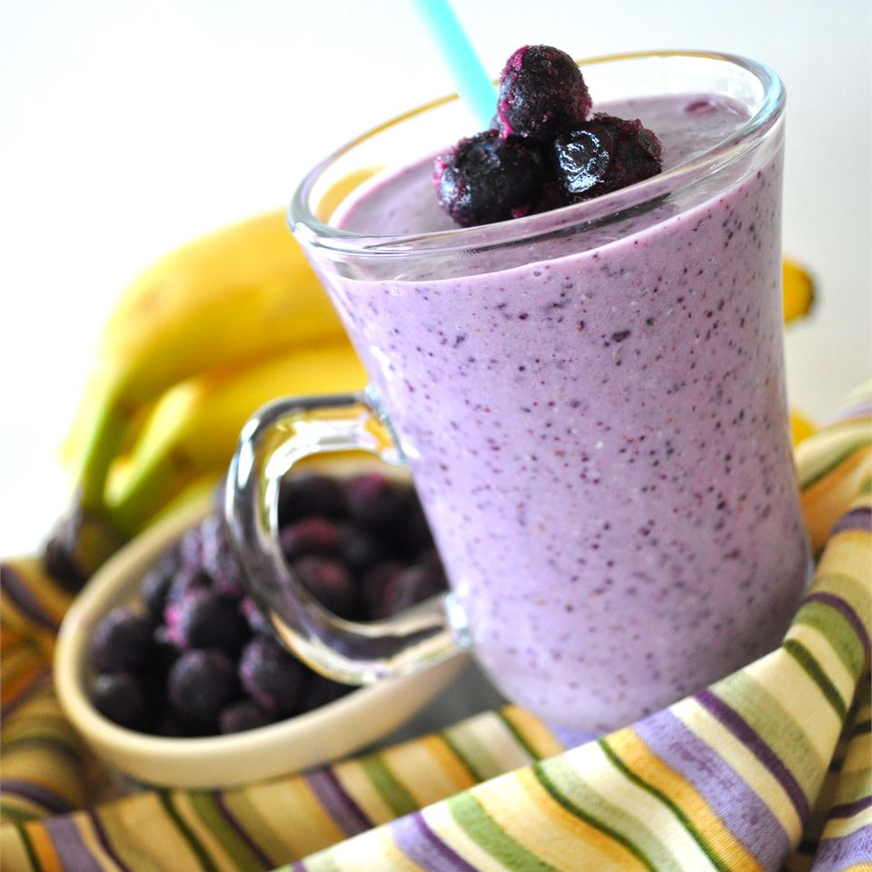

Blue Smoothie

Razzy Blue Smoothie
This naturally sweet and creamy, frosty cold smoothie packs a lot of flavor and a nutritious punch.
Perfect for any occasion.
Ingredients:
- 1 Banana
- 16 Whole Almonds
- 1/4 Cup Rolled Oates
- 1 Tablespoon Flaxseed Meal
- 1 Cup Frozen Blueberries
- 1 Cup Raspberry Yogurt
- 1/4 Cup Concord Grape Juice
- 1 Cup 1% BUttermilk
Steps:
- Peel the Banana and cut into 1/2 inch chunks. Chill in freezer till solid (about 2 hours).
- Place almonds, oates, and flaxseed meal into a blender, pulse until finely ground. Add the frozen banana,
frozen blueberries, yogurt, grape juice and bubttermilk. Puree until smooth.